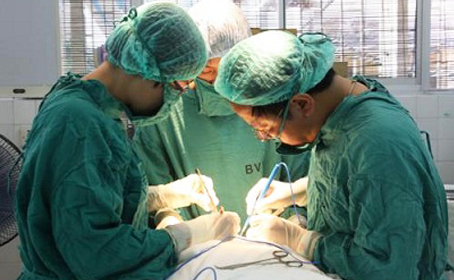

nứt kẽ hậu môn
Nứt kẽ hậu môn là vết loét do lớp da ống hậu môn dưới vùng nếp nhăn bị nứt ra mà thành, hướng của nó tạo thành hình bình hành với ống hậu môn, dài khoảng 0,5cm -1cm, hình thoi hoặc hình oval, thường gây đau đớn, khó khép lại. Nứt kẽ hậu môn là một bệnh hậu môn trực tràng thường gặp, cũng là nguyên nhân gây ra đau hậu môn ở thanh niên và người trung niên. Nứt kẽ hậu môn thường gặp hơn ở người trung niên, nhưng cũng có thể phát sinh ở người già và trẻ nhỏ, nam nhiều hơn nữ. Thời kì đầu chỉ có một vết nứt nhỏ trên da ống hậu môn, đôi khi có thể nứt đến các mô dưới da hoặc tầng cơ vòng. Vết nứt có thể là hình tuyến hoặc hình lăng trụ. Nếu mở hậu môn, bề mặt vết nứt có thể là hình tròn hoặc hình oval.
NGUYÊN NHÂN
Trong số các nguyên nhân gây nứt kẽ hậu môn, táo bón là nguyên nhân lớn nhất. Theo các bác sĩ của phòng khám đa khoa 168, phân đọng lại lâu ngày trong trực tràng không chỉ gây ung thư trực tràng mà phân tích lũy còn ảnh hưởng đến tuần hoàn máu. Khi người bệnh phải dặn mạnh thì hậu môn phải chịu áp lực càng cao, gây một loạt các biến chứng bệnh lý như: xuất hiện vết nứt, sưng...
Khi đi vệ sinh, rất nhiều người đều thích ngồi xổm hút thuốc, đọc sách báo, làm cho thời gian ngồi xổm đại tiện kéo dài, dễ gây tụ máu trong hậu môn trực tràng mà hình thành các bệnh. Khi đại tiện phải dặn quá mạnh chỉ có thể gây tụ máu và tăng áp lực đến hậu môn trực tràng và cơ vùng đáy chậu, hình thành nứt kẽ.
Tổn thương cũng là nguyên nhân trực tiếp gây nứt kẽ. Phân rắn gây nứt da ở ống hậu môn, nuốt phải vật lạ, xương gà, cá mở hậu môn không đúng cách, làm phẫu thuật ở vùng hậu môn, sinh đẻ .... đều có thể là những nhân tố gây tổn thương. Người táo bón mãn tính, đại tiện dặn mạnh sẽ dễ làm tổn thương đến vùng da ống hậu môn, dần dần vết nứt sâu đến hết tầng da, gây loét do viêm nhiễm mãn tính.
TRIỆU CHỨNG
ĐAU ĐỚN
Khi mắc phải bệnh nứt kẽ hậu môn, đau đớn chính biểu hiện đầu tiên mà người bệnh phải đối mặt, các cơn đau luôn ở trong tình trạng kéo dài liên tục, cơn đau có thể diễn ra trong mấy tiếng đồng hồ, sau đó người bệnh lại thấy không đau nữa. Khi đi đại tiện, những cơn đau này lại tiếp tục tiếp diễn, dày vò. Các thói quen quỳ gối, ngồi xổm, đột ngột tăng áp lực ở vùng bụng như hắt hơi cũng là nguyên nhân tiềm ẩn dẫn đến bệnh nứt kẽ hậu môn, những cơn đau của bệnh này có tính chu kỳ.
ĐẠI TIỆN RA MÁU
Khi hậu môn bị nứt kẽ, khi đi đại tiện, người bệnh có thể nhìn thấy máu, lúc đại tiện, người bệnh cố rặn ra phân nên đã gây tổn thương lên hậu môn, dẫn đến chảy máu, thông thường máu chảy ra không nhiều, trên phân cũng dính một ít máu tươi, hoặc sau khi đại tiện máu chảy kiểu nhỏ giọt, lấy giấy chùi hậu môn thấy có máu trên giấy.
TOÀN THÂN MỆT MỎI - SUY NHƯỢC TINH THẦN
Đây là căn bệnh mà mỗi người đã từng mắc phải đều cảm thấy khó chịu khổ sở vô cùng, bạn không những bị các cơn đau dày vò, những bệnh nhân bệnh nặng thì tinh thần suy nhược. Người mắc bệnh này rất sợ đi đại tiện, thậm chí có người không chịu ăn để hạn chế phải đi đại tiện nhiều, lâu dần dễ mắc chứng chán ăn, dẫn đến cơ thể bị thiếu chất. Với phụ nữ, người mắc bệnh này sẽ ảnh hưởng đến chu kì kinh nguyệt, làm cho chu kỳ kinh nguyệt không ổn định, ngoài ra còn bị đau lưng, đau xương chậu. Khi chỗ nứt kẽ hậu môn bị viêm nhiễm, toàn thân người bệnh sẽ phát sốt, xuất hiện hiện tượng sưng tấy và chảy máu ở hậu môn
NGỨA HẬU MÔN
Các chuyên gia trong ngành chỉ ra rằng do chỗ nứt ở hậu môn bị loét, hay chất dịch tiết của búi trĩ bị sa xuống hoặc chất dịch tiết ra từ cửa hậu môn đã kích thích phần da của hậu môn bị ẩm ướt và ngứa ngáy. Hậu môn ướt át, lúc nào cũng khiến cho người bệnh cảm thấy bứt rứt khó chịu, cọ sát sẽ tạo ra những vết nứt nông trên da, gây tổn hại đến da.
Phương pháp
Tỉ lệ mắc bệnh nứt kẽ hậu môn rất cao, là một trong số những bệnh hậu môn trực tràng thường gặp. Vì vậy, người bệnh nhất thiết không được xem nhẹ tác hại của bệnh, cần phải kịp thời đến các cơ sở y tế để được điều trị đúng cách. Về cách điều trị nứt kẽ hậu môn, phương pháp triệt để nhất không gì khác ngoài làm tiểu phẫu. Tuy nhiên phương pháp phẫu thuật truyền thống gây rất nhiều đau đớn. Phòng khám đa khoa 168 sử dụng kĩ thuật xâm lấn tối thiểu RPH điều trị bệnh trĩ tiên tiến nhất thế giới hiện nay, là một phương pháp có độ tin cậy khá cao.
6 ƯU ĐIỂM CỦA KỸ THUẬT XÂM LẤN TỐI THIỂU RPH
1.An toàn: Không cắt đi phần đệm hậu môn, bảo đảm được chức năng bình thường của hậu môn, tránh tình trạng hẹp hậu môn, mất kiềm chế hậu môn...
2.Đau đớn ít: Kéo búi trĩ bị sa xuống lại vị trí ban đầu và cắt bỏ, không làm tổn thương đến vùng da xung quanh hậu môn, sau khi phẫu thuật không đau.
3.Vết thương nhỏ, hồi phục nhanh: Máy kẹp cắt khoanh niêm mạc thành một vết thương kín miệng, ít chảy máu, tránh những phức tạp khi thay thuốc, rất nhanh hồi phục lại sinh hoạt bình thường.
4.Thời gian ngắn: Cả quá trình chỉ hết khoảng 20 phút.
5.Phạm vi điều trị rộng: Trĩ vòng, trĩ to, trĩ nội, trĩ ngoại, trĩ hỗn hợp, nứt kẽ hậu môn, rò hậu môn, sa hậu môn...
6.Thích hợp với nhiều loại đối tượng: Do tổn thương ít, thích hợp với người trung niên hoặc người lớn tuổi, những đối tượng người bệnh luôn coi trọng hiệu quả điều trị, người bệnh đã chữa bằng phương pháp truyền thống nhưng vẫn tái phát, người bệnh trĩ hoặc nứt kẽ hậu môn.
Lời khuyên B.Sỹ
Ngày nay, tỷ lệ nữ giới mắc bệnh nứt kẽ hậu môn cao hơn nam giới rất nhiều, các bạn nữ nên chú ý làm tốt công tác phòng chống căn bệnh này. Vậy thì nữ giới nên phòng chống bệnh này như thế nào?
1. Duy trì đại tiện dễ dàng, tạo thói quen đại tiện theo giờ mỗi ngày, khi bị táo bón, không nên gắng sức rặn, mà nên dùng nước muối ấm để tháo thụt phân hoặc cho vào trong hậu môn cho nhuận tràng, thông tiện.
2. Kịp thời điều trị viêm hốc hậu môn, nhằm ngăn ngừa sau khi viêm nhiễm hình thành viêm loét và lỗ rò dưới da.
3. Khi sử dụng thiết bị kiểm tra hậu môn, tránh thao tác mạnh làm tổn thương ống hậu môn.
4. Kịp thời điều trị các bệnh gây nên nứt hậu môn như: viêm, loét kết tràng nhằm phòng ngừa dẫn đến nứt kẽ hậu môn, v.v...
5. Các bạn nữ cần đề phòng nứt kẽ hậu môn, không uống rượu, không ăn đồ cay nóng, đồ ăn uống cũng không nên quá thanh đạm mà nên kết hợp thức ăn có hàm lượng nhiều chất xơ, rau xanh, v.v... để đại tiện được đễ dàng.